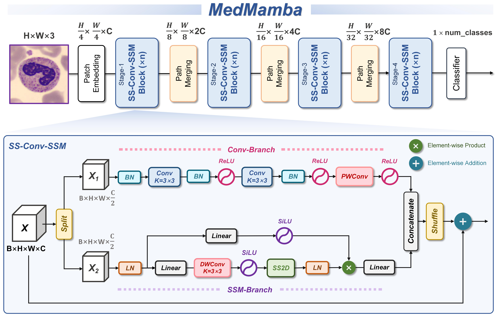
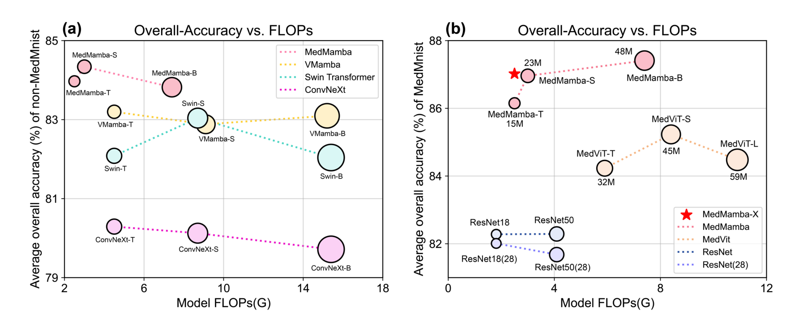
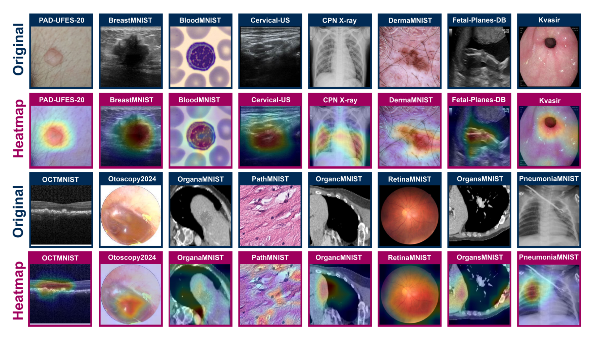
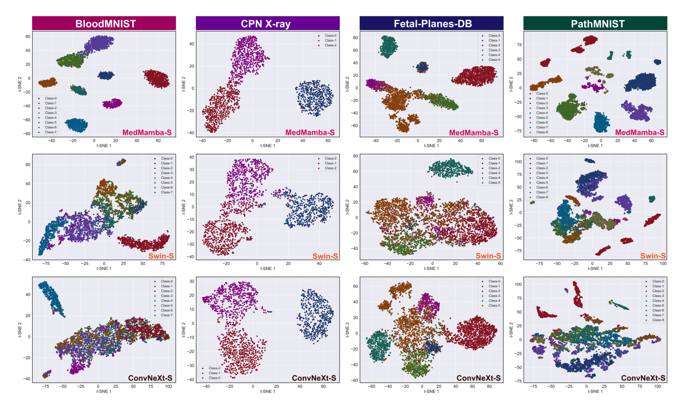

前言：初探医学图像分类，一个关于“权衡”的故事
最近开始在医学图像分类这个方向做了一点点了解，读了学长推荐的 MedMamba 这篇论文，感觉自己所知甚微、所学甚少。话休絮烦，这篇笔记主要记录一下笔者对这篇文章的理解和一些不成熟的思考。
医图领域貌似和CV大环境的情况大差不差，都由两大主流架构主导：CNNs 和 Vision Transformers (ViTs)。
二者各有所长，优势互补。先说CNNs，通过卷积核的局部感受野和参数共享机制，它在提取图像的局部纹理和边缘特征上效率极高。但它的全局视野十分受限，很难将图像中相距很远的像素点关联起来，也就是所谓的“长距离依赖”建模能力不足。而在医学诊断中，这种长距离依赖恰恰至关重要。 比如在诊断肿瘤是否转移时，医生需要同时观察原发灶和远处的淋巴结；或者在分析神经退行性疾病时，需要捕捉全脑不同区域之间的关联变化。这些都是CNN的天然短板。
Vision Transformers (ViTs)则借鉴NLP领域的思想，通过自注意力机制赋予了模型完全意义上的绝对全局视野。但代价是惊人的计算复杂度——与图像块数量的平方 (N^2) 成正比。 这可能意味着模型训练需要极长的周期和顶级的硬件，而推理部署也对医院的设备提出了很高要求。如果一个AI模型需要一台专用的高性能服务器才能运行，那它在基层医院的普及基本无从谈起。
新的挑战者：Mamba 架构的核心思想
MedMamba 的名字里就自带答案。它引入了一个菜菜笔者之前在视觉领域接触不多的新架构：Mamba，它源自于状态空间模型 (State Space Model, SSM)，这里不得不放一篇奆佬的超级通透且毫无门槛的博客链接，一方面是知识本身给予我的振奋，另一方面是这位佬讲的是太直观太细致了，持续拜读中🙇。
Mamba 最吸引笔者的地方在于它对性能和效率的兼顾：
- 能力上，它通过一种“选择性扫描机制 (Selective Scan)”实现了对长序列的强大建模能力。这种机制的核心在于它的模型参数是根据输入动态变化的，从而能选择性地决定哪些信息需要记忆，哪些可以遗忘。这在思想上与ViT的注意力机制有异曲同工之妙，都是一种“内容感知”的能力，但是效率更胜一筹。
- 效率上，它彻底告别了 O(N^2) 的噩梦，实现了线性的计算复杂度 O(N)。这是通过一种类似RNN的序列扫描方式实现的。
这里笔者想对比ViT的自注意力机制比较好理解Mamba的O(N)的优越性。
先聊聊ViT的O(N^2)吧，对于一个输入序列X = {x_1, x_2, ..., x_N}，ViT想要计算出第
t 个输出y_t，思路抽象成公式大概如下： \[
y_t = Attention(query_t, {key_1, ..., key_N}, {value_1, ..., value_N})
\]
这里的query_t就源自于x_t，它需要和每个key_*做点积运算（通常？），去分析每个点的与第
t
个点的相关性，因此这一步的复杂度就是O(N)，而N个节点都需要这样的步骤，复杂度自然就是O(N^2)了。这是一种不计代价地“全局广播式”计算，好处就是灵活性被完完全全地实现了，任意两个被分割地patch无论离得多远，都能直接建立联系。
相对地，Mamba的O(N)又是怎么一回事儿呢？它更像是一个高效的流水线处理，每个节点会维护一个隐藏状态h（hidden
state），计算第i个输出y_i的时候过程可以简化为：
\[
\begin{cases}
h_t = f(h_{t-1}, x_t)\\
y_t = g(h_t, x_t)\\
\end{cases}
\] f 是状态更新函数； g
是输出函数。与ViT不同的点就在于这个h_{t-1}，它不仅是上一刻的状态，还是所有历史信息的浓缩。类似于我们熟知的RNN，模型沿着序列从头到尾“扫描”一遍，每个元素只被处理一次，所以总计算量呈线性，即
O(N)。
这个从 O(N^2) 到 O(N) 的飞跃，大抵是 Mamba 能够成为 ViT 高效替代方案的根本原因。然而，这种效率的“得”，背后必然有其“失”。 Mamba的线性扫描，放弃了ViT那种理论上可以一步到位地建立任意两个Patch之间联系的完全灵活性。它是一种结构化的、沿预设路径的信息聚合。这种用“完全的灵活性”换取“巨大效率”的权衡，是否值得？ 在视觉任务中，图像的二维空间结构至关重要，单向的1D扫描似乎并不足够。这也许就引出了 MedMamba 真正的核心设计——它没有直接拥抱纯Mamba，而是选择了一条更精巧的融合之路。
核心探秘：拆解 MedMamba 的内部架构
如我们上一章所说，1D序列上潜力无限的MedMamba如何将其应用于2D图像，并与CNN的优势相结合，就成了最关键的问题。作者没有粗暴地用
Mamba 替换掉整个网络，而是设计了一个名为 SS-Conv-SSM
的混合模块，这构成了MedMamba的核心架构。
整体蓝图
最近写论文画图也画了不少，感觉作者大大的图画的真好看，笔者也想多多学习这种画图基本功，从Github上项目中扒下来放在这里展开讨论一下模型骨架。

整体框架设计给人一种成熟且沉稳的感觉。先通过Patch
Embedding将图像分割成块，然后经过四个stage的逐步下采样，应该是通过Patch
Merging实现的（笔者认为作者应该笔误写成Path
Merging了），这个方法对信息的保留度很高，不会像Max
Pooling与Average
Pooling一样损失信息，或者更准确地说是只有”学习式损失“，也就是在最后线性映射将4C维的特征向量压缩到2C维，但是和直接丢弃不同，反向传播会帮助网络来学习到最优的压缩方式。通过这样的方式，模型在降低空间分辨率的同时逐层加深通道数。这个过程使得模型能够逐步扩大感受野，提取从低阶（如边缘、纹理）到高阶（如器官轮廓、病灶形态）不同层次的语义特征。
感觉这样的主流的模型骨架更像是提供了一个公平的范式，便于该模型与其他SOTA堂堂正正地比拼性能，而取胜的关键就在SS-Conv-SSM模块当中。
SS-Conv-SSM：“分工”与“协作”的设计艺术
其实笔者感觉这种设计艺术有些哲学意味在其中，由图可看出先分道扬镳再终有重逢的意味，双线并行的模型设计在近年来貌似愈发流行，优势互补的设计在这个百花齐放的时代不无道理。
SS-Conv-SSM的模块内容可以分成以下几个部分：
Part 1: 分工 (ChannelSplit) 模块接收到输入特征图后，第一步就是沿着通道维度将其“一分为二”，送入两个并行的分支。作者貌似认为对于医学图像任务，局部细节的捕捉和全局上下文的理解是同等重要的。 这不禁让人思考，如果这个划分比例成为一个可调的超参数，是否能针对不同特性的数据集（比如某些数据集纹理丰富而有些数据集结构稀疏）进行微调，从而实现更优的性能？但是这又会引入一定的计算量，综合考量下还有待商榷。
Part 2: 卷积分支 (Conv-Branch) 其中一半的通道，进入了纯粹的CNN分支。几个3x3的卷积层，专注于它们最擅长的事情：精细地提取局部空间特征。这很大程度上保证了模型不会丢失对微小病灶、精细纹理的敏感度。
Part 3: SSM分支 (SSM-Branch) 另一半通道，则承担起全局建模的重任。其核心是SS2D (2D-Selective-Scan) 模块。这是从VMamba借鉴来的关键技术，也是Mamba能够在2D图像上工作的根本。它的思路非常巧妙：既然1D扫描是我的强项，那我就从不同方向多扫几遍。具体来说，它通过四向扫描（从左上、右下、左下、右上四个方向将2D图像展平为1D序列并分别处理）来近似模拟全局感受野。这样一次处理，每个像素点就都融合了来自整张图各个方向的信息。
这里摆一幅VMamba的官方示意图，膜拜一下，想法简单而效果卓越，笔者也想有这样的巧思！

然而，这种近似并非没有代价。 四向扫描虽然高效，但它对于图像边缘或角落的像素，信息来源会天然不均衡。这是否会影响模型对边缘病灶的判断？这构成了它设计上的又一个“得”与“失”的权衡，效率和全局一致性的取舍。
Part 4: 协作 (Concatenate & Channel-Shuffle) 当两个分支各自完成擅长的任务后，它们的输出被重新拼接在一起。如果仅仅是拼接，那两部分信息依然是割裂的。作者在这里加入了一个非常精妙的操作——通道重排 (Channel-Shuffle)。这个操作就像洗牌一样，将来自卷积分支和SSM分支的通道彻底打乱混合。它确保了在进入下一个SS-Conv-SSM模块时，被切分的两半特征都同时包含了上一层提取到的局部信息和全局信息。这极大地促进了两种不同尺度特征的深度融合。
当然，我们也可以考虑更复杂的融合方式，比如可以引入一个tiny的注意力模块，但是相比Shuffle这个零计算开销的设计来说，会增加一些计算负担，这里作者对极致效率的追求也就可见一斑了。
通过这样一套“分工-专精-协作-融合”的流程，SS-Conv-SSM模块在一个统一的单元内，优雅地实现了局部特征与全局依赖的并行捕捉与深度融合，构成了MedMamba强大性能和高效率的核心。
实验验证：数据背后的铁证如山
全面的基准测试奠定可信度
在深入具体数据之前，笔者先关注了其实验设置的广度。论文中提到，他们在 16个不同的公开和私有数据集 上对 MedMamba 进行了评估，其中包含了学长要求的公开数据集共计14个，这些数据集涵盖了10种不同的影像模态（如超声、X光、CT、内窥镜等）。这一点非常重要，因为它证明了 MedMamba 不是只能在特定类型数据上表现良好，其架构设计具有很好的通用性 (Generality)。
性能与效率的全面胜利
(Accuracy vs. FLOPs) 这张图，笔者认为是整篇论文实验结果中最核心、最直观的展示。它将不同模型放在一个二维坐标系中，X轴代表计算量(FLOPs)，Y轴代表平均准确率(OA)，圆圈大小代表参数量。

我们评估一个模型的“性价比”，就是要看它是否能处在这个坐标系的左上角区域——即以更低的计算成本，获得更高的性能。
从图中可以清晰地看到，无论是 MedMamba-T, S, 还是 B，绿色的 MedMamba 家族模型点，都稳定地出现在了其同级别对手（如 Swin-T/S/B, ConvNeXt-T/S/B）的左上方。这完美地、可视化地印证了我们之前的分析：SS-Conv-SSM 混合架构确实实现了更优的性能-效率权衡。它不仅在大多数任务上取得了SOTA的性能，而且是以显著更低的计算和参数开销实现的。
洞悉模型的真实想法
除了“跑分”很高，一个好的模型还应该让我们相信它的决策过程是合理的。
- 它在看哪里？: 论文展示的Grad-CAM热力图，让我们得以一窥模型的“注意力”。在不同的数据集上，高亮的热力图区域都准确地覆盖了图像中的病灶区域，而不是一些无关的背景。这在很大程度上说明，MedMamba学到的是有意义的、符合医学逻辑的特征，这增强了模型的可解释性和在临床应用中的可信度。

- 它学到了什么？: t-SNE提供了一个更深层次的视角。通过将高维特征降维可视化，我们可以直观地看到模型对不同类别样本的区分能力。Figure 6的对比展示出了MedMamba的卓越：相比于Swin-S和ConvNeXt-S混杂、重叠的特征点簇，MedMamba-S学习到的特征表示显然具有更强的区分度，不同类别的样本被清晰地分离开来。这从根本上解释了它为何能取得更高的分类精度。

再思考
这次精读也让我对几个关键评价指标有了新的认识。尤其是在类别通常不均衡的医疗数据中，相比于最直观的OA (Overall Accuracy)，F1-Score以及不依赖特定阈值、能衡量模型整体分类潜力的AUC，都是更可靠、更全面的评估标准。MedMamba在这些关键指标上的全面领先，进一步巩固了其SOTA的地位。
(同时也有一些疑惑，面对数据极不平衡的医图数据集，为什么大家在比较性能的时候还会考虑OA呢，这难道不是几乎没有参考价值吗)
总结与展望：有何收获？
又到了一篇博客的尾声，笔者想要沉淀一下本次论文阅读的收获，以记录自己成长的足迹。我对以下问题有了新的认识与思考：
- 架构设计的艺术哲学： 仿佛这些年来底层算子的创新迭代日益趋缓了，算法的上层建筑在快速发展，将已有的模块利用优势互补、扬长避短等思想高效融合起来未尝不是一种解决特定场景任务的好方法。但是不同于某些同行在模型中使用一些即插即用的模块，笔者认为这些融合的结果必须是巧妙的、有据可依的，而不是强行缝合得到的怪物，此二者显然有天差地别。
- 效率与性能的再平衡： 医图分类是我接触过最接近于现实的CV领域了，确实不能像纸上谈兵那样，为了追求微乎其微的性能提升而不计成本地堆叠计算量。MedMamba也向我们成功证明，一个足够强大的近似全局建模不简单比ViT差，实际应用价值也远超ViT等各种大型模型。
- “归纳偏置”的价值： 这篇论文也让笔者重新思考了“归纳偏置”的角色。ViT的成功曾让我们一度迷恋于“让模型从零开始学习一切”的暴力美学。这也让笔者想起曾经在分析信号时做特征工程与否的抉择，原则上将原始数据喂给Transformer便是最先进的选择，但是我们用前辈们的先验知识做特征工程喂给简单的LSTM性能一样不差。同样MedMamba通过重新拥抱CNN的“局部性”和“平移不变性”偏置，向我们证明了：为特定任务注入合理的先验知识，不见得一定是原始的、费力而不讨喜的工作，还有可能是一种融合先验与未知的明智选择
算力的洪流之下，人类的智慧与巧思，依然是点亮前路最璀璨的星火。
If you like this blog or find it useful for you, you are welcome to comment on it. You are also welcome to share this blog, so that more people can participate in it. If the images used in the blog infringe your copyright, please contact the author to delete them. Thank you !